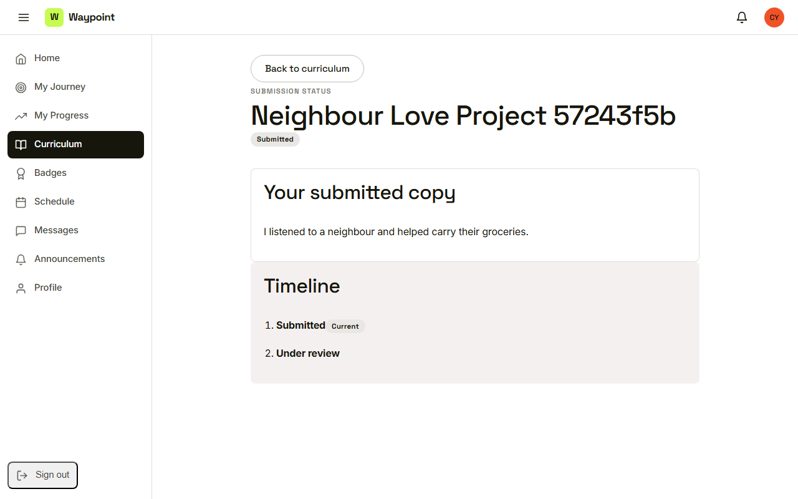
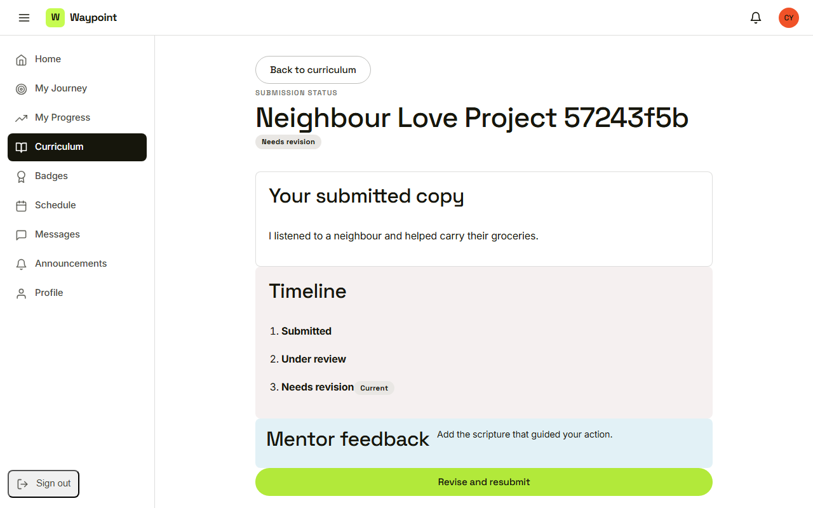
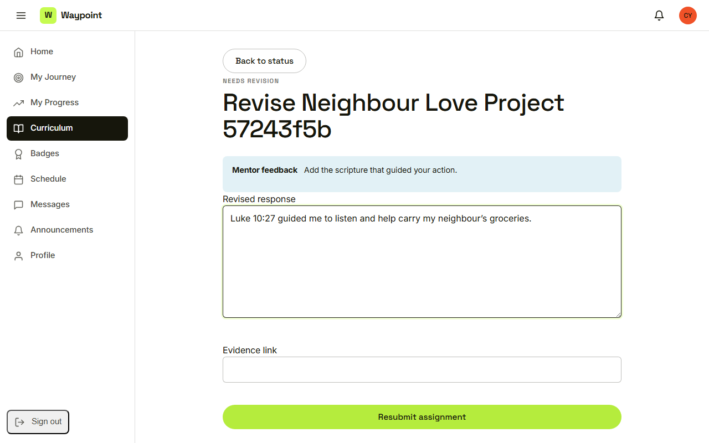
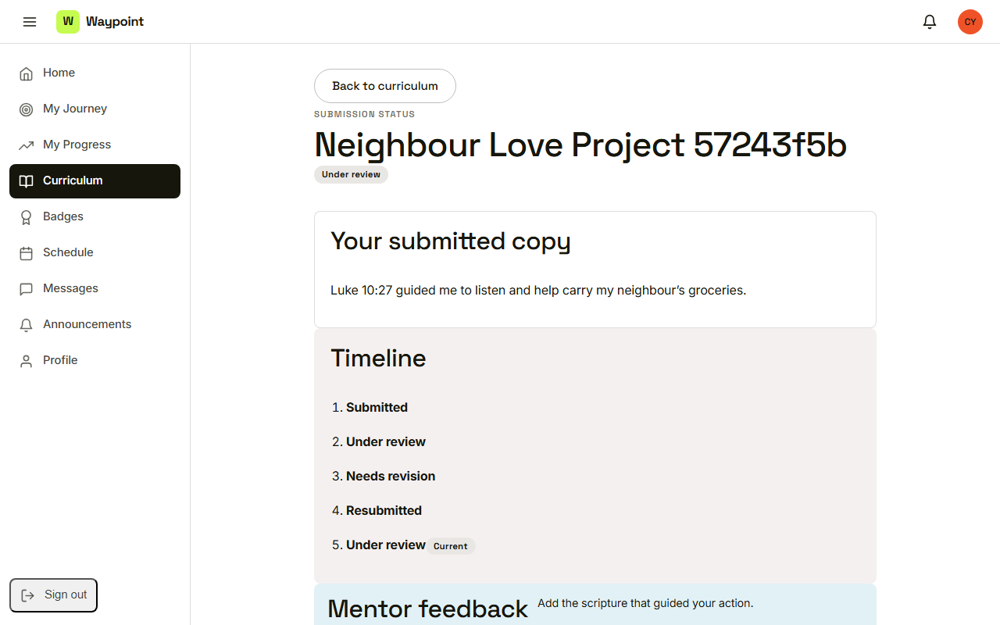
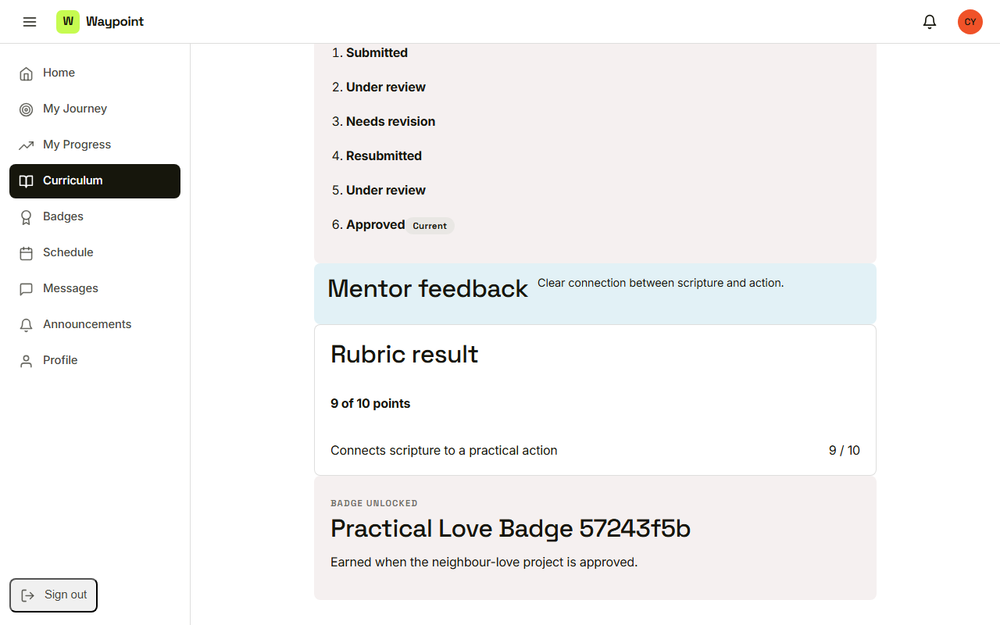

Waypoint · Video 040
Tracking and revising a submission
From submitted to approved
Submitted, under review

A read-only copy and a timeline
Needs revision

The mentor's note and a way back
Revise and resubmit

Feedback on top, earlier answer filled in
The whole story stays

Back under review
Approved

Comment, points and badge
Things to remember
A submission is a read-only copy
The timeline shows every step
A revision request includes a note and a way to resubmit
Approval shows points, comment and badge